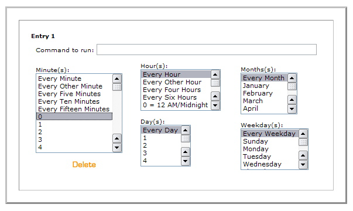

Movable Type で指定日投稿機能を利用するためには、今回のバージョンでは、サーバの "cron" に設定を行う必要があります。UNIX シェルから直接編集を行うか、もしくは cPanel を利用して設定します。ホスティング・サービス・プロバイダによっては、このような機能を提供していない場合があります。
指定日投稿の機能の設定は一度行うだけで利用できるようになります。設定後は、エントリーの投稿の際、エントリーの状態に「指定日」を選んで保存するだけです。設定したスクリプトが自動的にエントリーを公開します。
投稿するときには、その投稿をいつ公開するのか「投稿日時」に設定してください。
LinuxまたはUnixサーバーのUNIX シェルを利用した設定
UNIX シェルが利用できるときには、次のように指定日投稿機能を設定します:
% crontab -e
0,15,30,45 * * * * cd <path to mt>; ./tools/run-periodic-tasks
cron は設定したスクリプトを毎時 0分、15分、30分、45分にそれぞれ実行します。アスタリスク「*」は cron に毎時、毎日、毎週、毎月実行することを指示しています。アスタリスクは、空白(スペース)をあけて設定する必要があります。
<path to mt> は Movable Type のアプリケーションをインストールしたディレクトリです。
追加できたら、ファイルを保存してエディタを閉じてください。cron は新しい crontab の設定を有効にします。
cPanel を利用した設定:
cPanel を利用した指定日投稿の設定方法は、以下のとおりです:

"Command to run" とラベルの付いたテキストボックスに、Movable Type のインストール先ディレクトリ名につづけて、 /tools/run-periodic-tasks を入力する:
cd <path to mt>; ./tools/run-periodic-tasks
起動時刻はあなたの好きなように設定してかまいませんが、15分間隔より短かくすることはお奨めしません。わたしたちが推奨する設定は「15分間隔」、「毎時」、「毎日」、「毎月」、「毎週」 です。
Windowsサーバーを利用した設定
Movable TypeをWindowsサーバーで起動している場合は、Windowsのタスク・スケジューラー・サービス機能を活用することで、同様にできます。タスクに以下の例の内容を登録してください。
"Movable Type Tasks"
runコマンドは、Perlインタープリタのパスおよびファイル名(例： C:\Perl\bin\perl.exe )、 tools\run-periodic-tasks の順に記述します。
Movable Type ディレクトリへのフルパスを指定してください(例： C:\Inetpub\wwwroot\mt )。
タスクの実行スケジュールは自在に設定できますが、スクリプトを15分未満の間隔で実行すると、サーバーに負担がかかるため、お奨めできません。環境や目的にあわせて調整してください。推奨する設定は「15分間隔」から「毎日」までです。